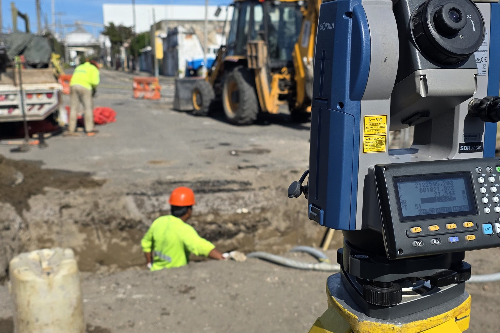
Servicios Especializados en Topografía y Geomática
Combinamos topografía de precisión con tecnología de vanguardia —como fotogrametría aérea con drones, receptores GNSS/RTK ligados a la RGNA del INEGI y escaneo para nubes de puntos 3D— optimizando tiempos de entrega y eliminando sobrecostos por desfases en obra.
¿Cómo te ayudamos?
Levantamos y modelamos tu terreno con equipo GNSS y estación total de precisión, en campo.
Minimizamos errores costosos en obra y planeación con datos confiables desde el primer trazo.
Recibes información topográfica clara y confiable, lista para tus trámites y proyectos.
Servicio 01
Estación total y GNSS en campo, con la precisión que exige cada proyecto de ingeniería, catastro o construcción.
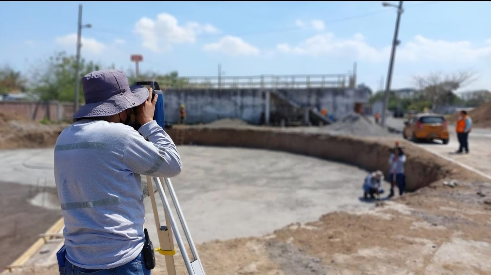
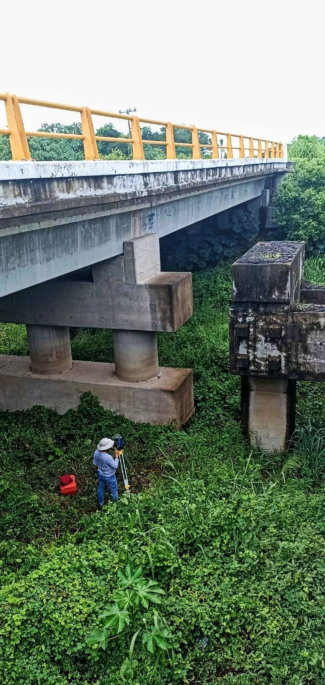
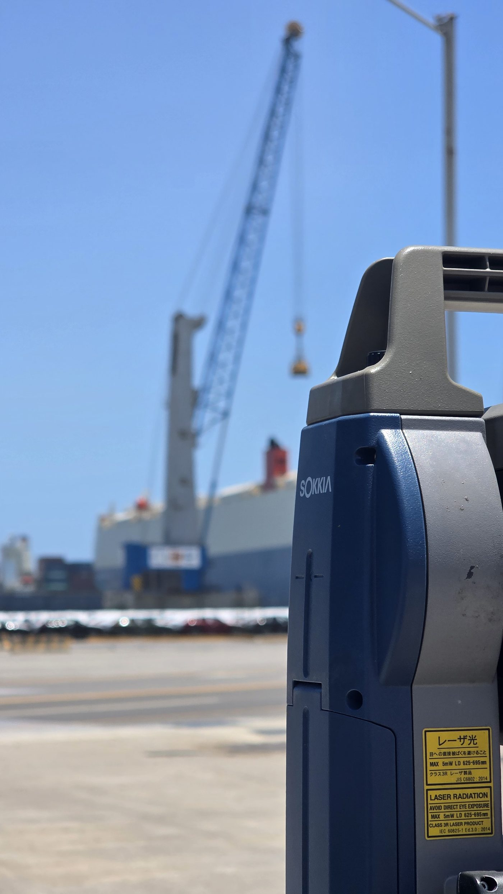
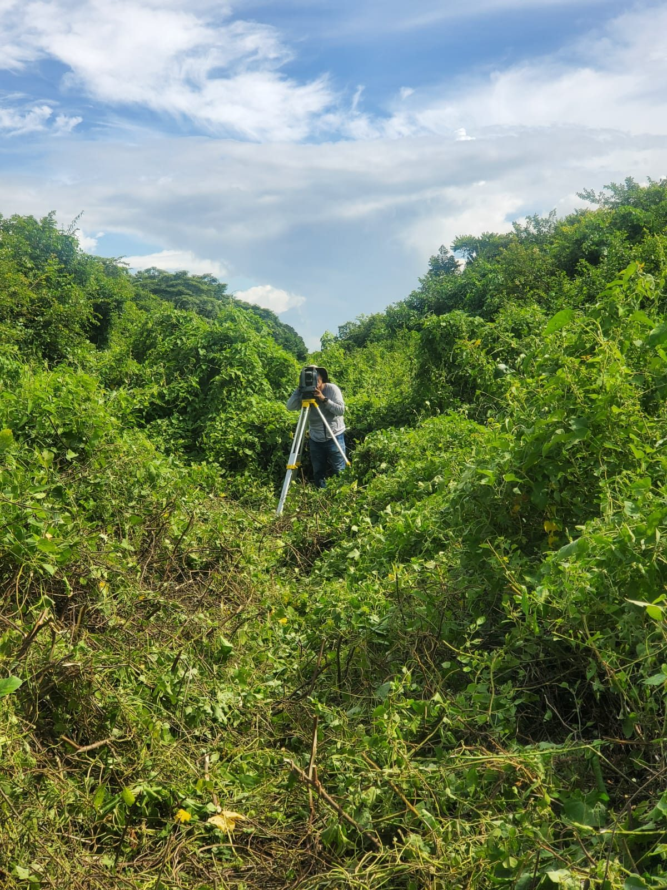
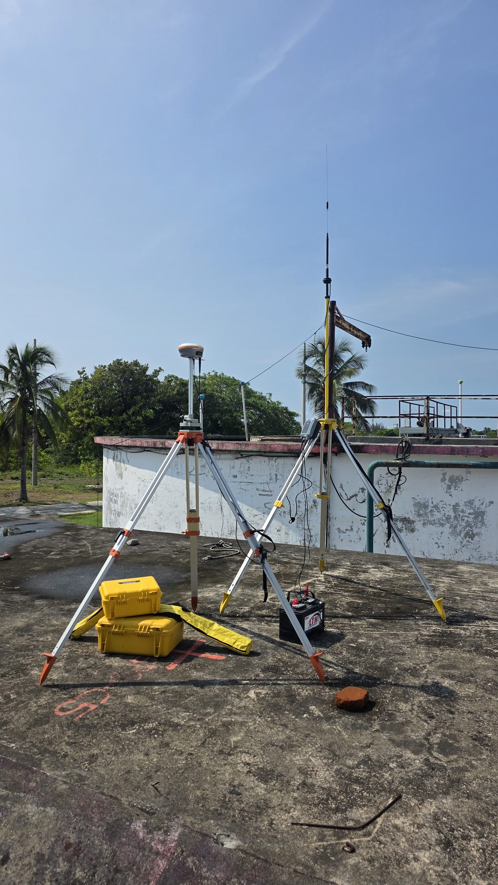
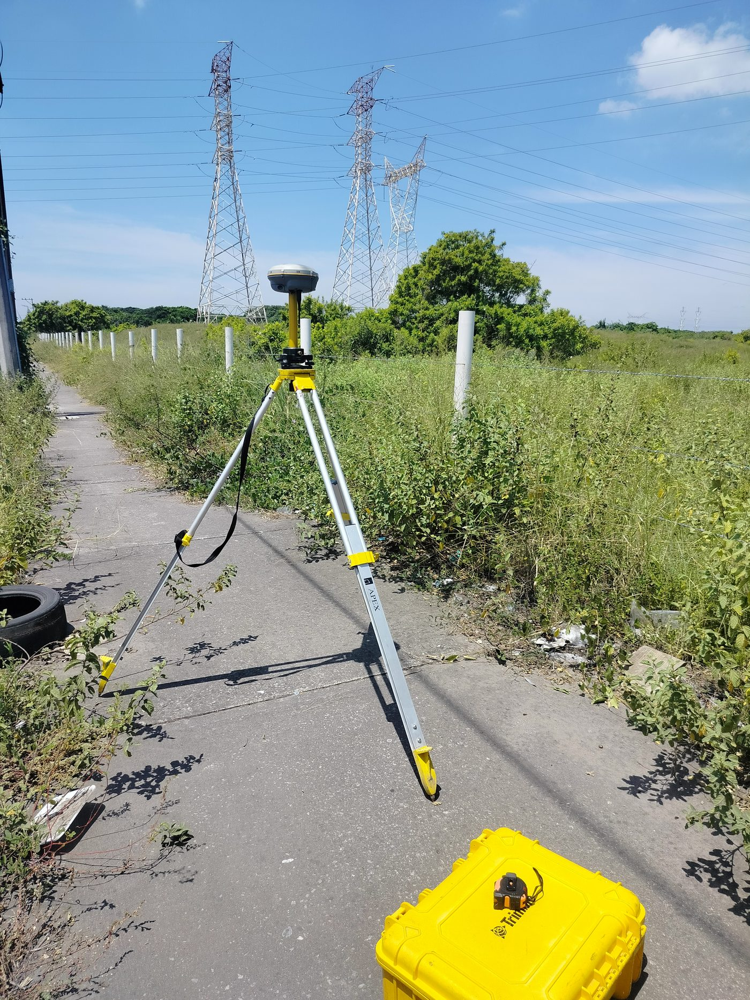
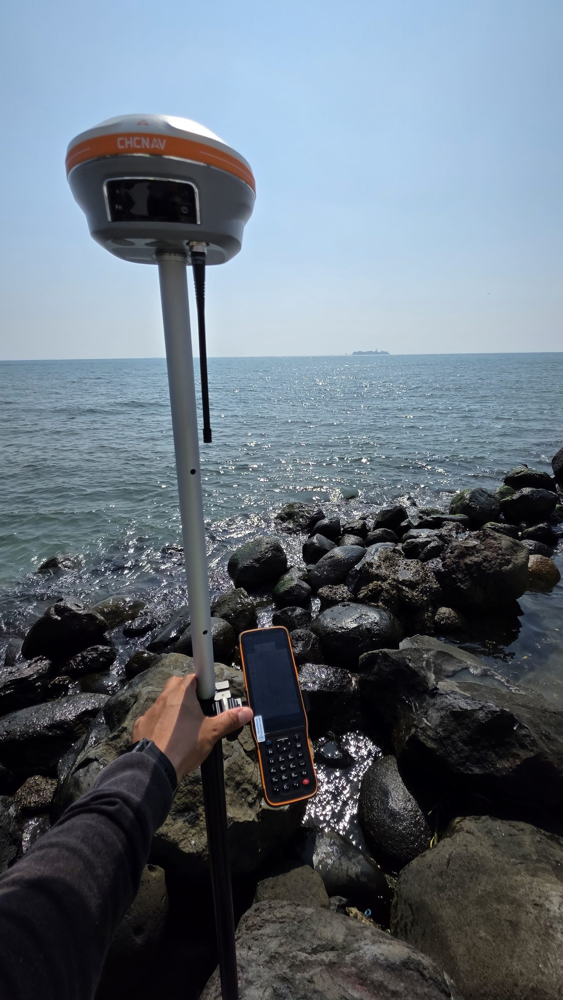
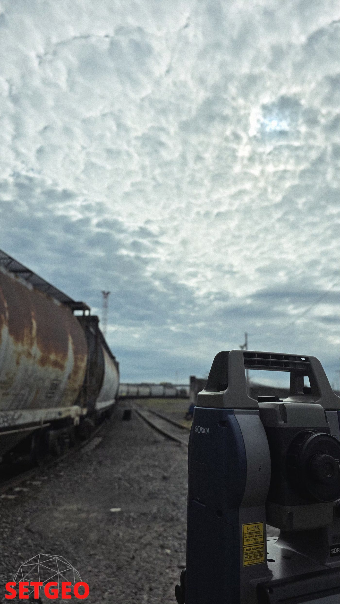
Servicio 02
Vuelos con dron RTK para generar modelos digitales del terreno, ortomosaicos y nubes de puntos clasificadas.
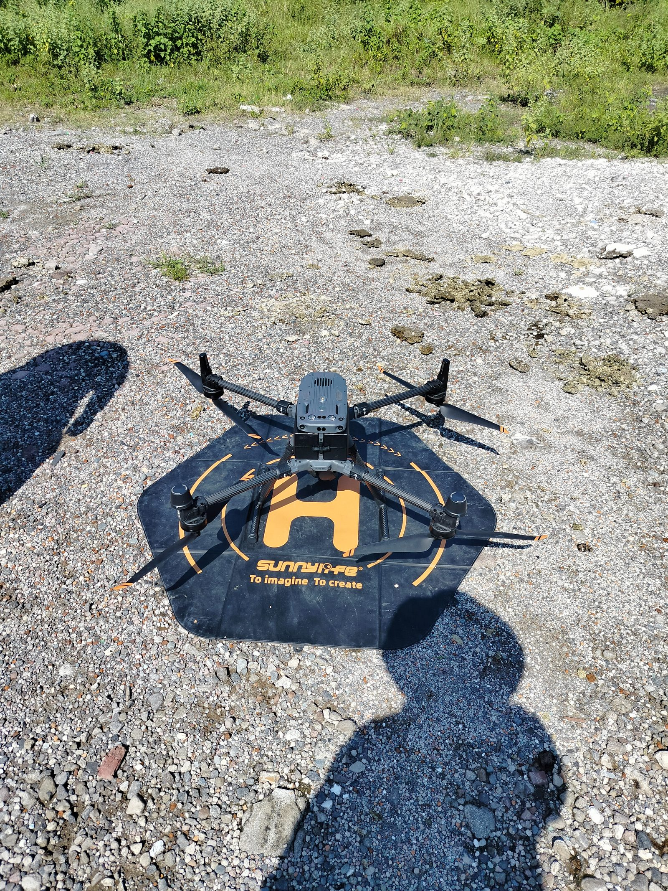
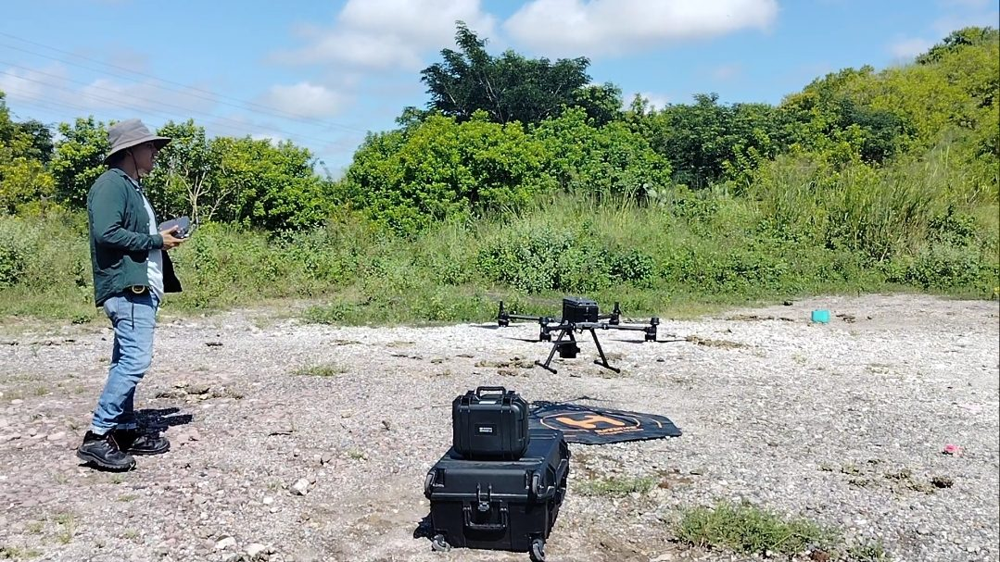
Servicios adicionales
Cartografía temática, capas vectoriales y ráster, curvas de nivel, teledetección y análisis NDVI.
Transformación de sistemas coordenados locales a marcos de referencia UTM / ITRF.
Lotificación de predios y coordinación con trámites ante registro y catastro.
Verificación y elaboración de proyectos rurales y urbanos durante la ejecución.
Nosotros
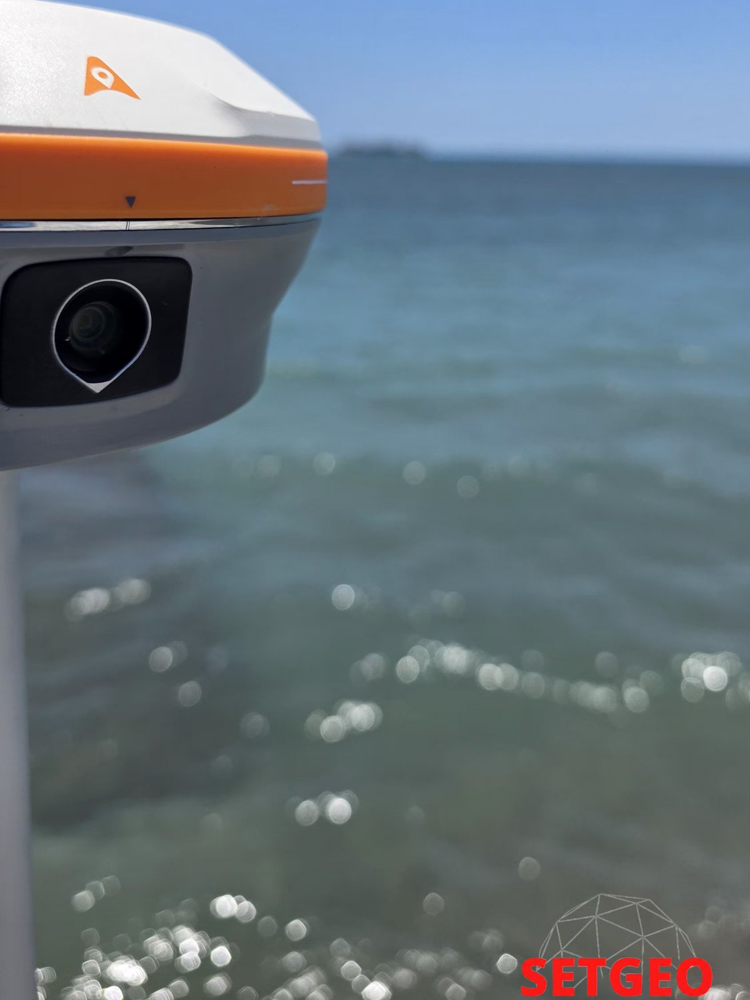
En SETGEO nos dedicamos a ofrecer soluciones integrales en topografía, geodesia y geomática. Con sede en Veracruz, México, nos respaldan la rigurosidad técnica y la constante actualización tecnológica para garantizar datos de alta fidelidad, indispensables para el éxito de proyectos de ingeniería, construcción y desarrollo territorial.
Fusionamos la experiencia técnica especializada con tecnología de vanguardia. Nuestro compromiso es convertir la complejidad geográfica e infraestructural en datos geoespaciales claros, precisos y accionables.
Proporcionar levantamientos y modelos de precisión matemática que eliminen la incertidumbre en obra y planeación, brindando a nuestros clientes la seguridad y confiabilidad que sus obras e inversiones requieren.
Ser el aliado geoespacial de referencia en la región y a nivel nacional, reconocidos por la exactitud de nuestros entregables, la innovación tecnológica y el rigor profesional en cada proyecto.
Implementamos tecnología de posicionamiento GNSS georreferenciada a la red del INEGI para asegurar la máxima validez legal y técnica en cada punto medido.
Incorporamos fotogrametría con drones RTK y modelado 3D, optimizando tiempos de levantamiento y proporcionando representaciones detalladas de la topografía.
Capturamos y analizamos la realidad del terreno para reducir errores en obra, evitar reprocesos y optimizar la planeación presupuestal e infraestructural.
Entregamos planos, mapas y modelos tridimensionales comprensibles y listos para integrarse en software de diseño y gestión de proyectos.
Contacto
Respondemos por WhatsApp, llamada o correo. Cuéntanos ubicación y tipo de levantamiento para preparar tu cotización.
"Precisión confiable
para tu proyecto"